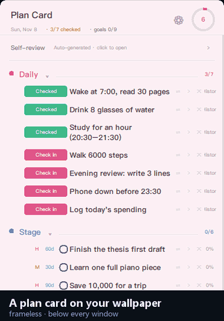
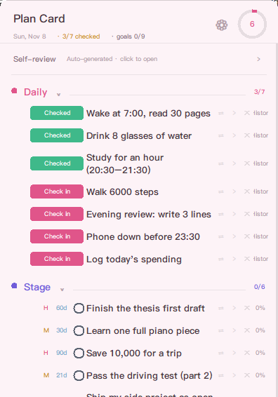
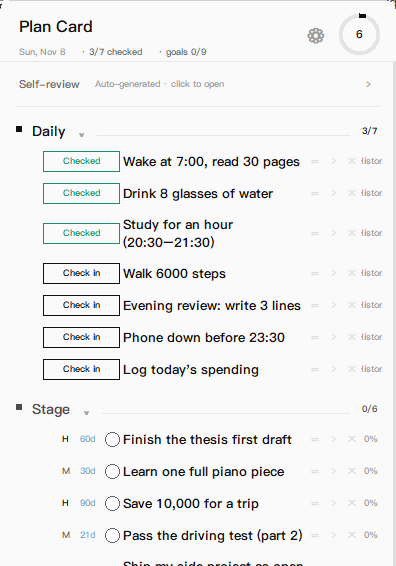
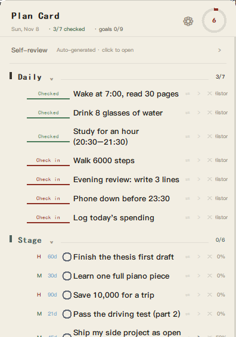
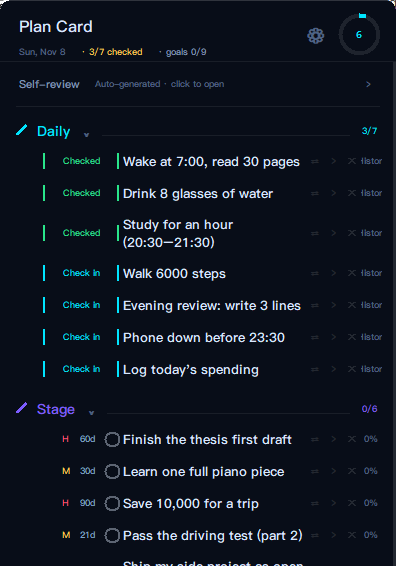
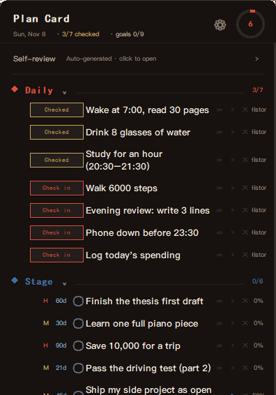
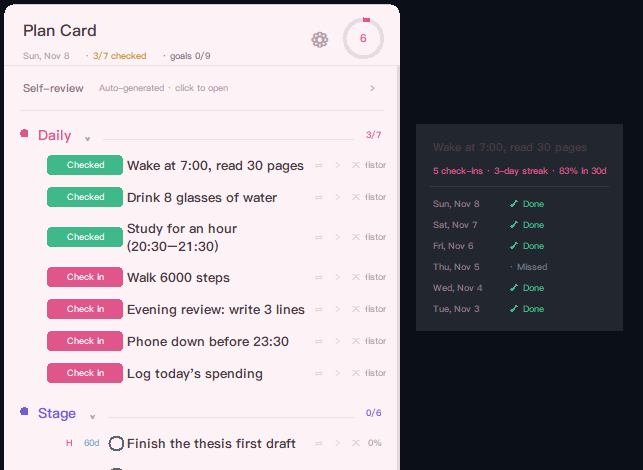

Windows 10 / 11 · Python 3.8+ · 0 dependencies Windows 10 / 11 · Python 3.8+ · 零第三方依赖
A desktop sticky note
for plans
一张贴在桌面上的便签
但它是四段计划
Frameless, always visible on your wallpaper, and it never covers your work. One Python file, zero dependencies, no account.
无边框、一直看得见、不挡任何窗口。单个 Python 文件， 零第三方依赖，不需要账号。

Four kinds of plans, four behaviours
四段计划，四种行为
They are separate because they behave differently — that is the whole design.
四段是因为它们行为不一样，这才是设计的核心。
Check in, keep the streak
打卡，留下连续天数
One button per habit. Every click is recorded, so you get a streak and a 30-day rate. The list resets each morning; the history does not.
一条习惯一个按钮。每次点击都记录，能看到连续天数和近 30 天打卡率。 清单每天早上重置，记录不会。
Count down to a date
倒数到一个日期
Pick a deadline from a calendar — no typing dates. The row shows
12d, Today or 3d late.
点日历选期限，不用手打日期。行内显示
剩 12 天、今天 或 逾期 3 天。
Ongoing, with a percentage
长期，带百分比
For things without a deadline. Shows how far along you are.
不设期限的事，显示完成百分比。
A parking lot
暂存区
Someday / maybe. Deliberately no percentage — it is not work yet.
以后想做的。故意不给百分比——它还不是任务。
Five themes, not five colour swaps
五套主题，不只是换色号
Each one also changes the type, the button shape, the section markers and the checkbox. Same card, five different manners.
每套连带字体、按钮形态、段标识、勾选框一起换。 同一张卡，五种性格。





A self-review you never write
一份不用你写的自我总结
Collapsed to one line at the top of the card, expandable. Days logged, check-ins, daily average, best streak — computed from your own data.
默认收在最上面一行，点开才看。有记录天数、打卡次数、日均完成、 最长连续——全部由你自己的数据算出来。
- Switch between day, week and month
- 可切日 / 周 / 月
- Nothing to fill in, nothing to remember
- 不用填、不用记
- Hidden by default, so the card stays quiet
- 默认隐藏，卡片保持安静

How it differs
跟别的不一样在哪
It is a sticky note that understands plans — not a task manager that lives in a browser tab.
它是一个懂计划的便签，不是一个住在浏览器标签页里的任务管理器。
| Plan Card | Desktop sticky note | 桌面便签 | Todo app | 待办 App | |
|---|---|---|---|---|---|
| Lives on the wallpaper | 贴在桌面上 | ||||
| Plans with structure | 有结构的计划 | ||||
| Check-in streaks built in | 自带打卡连续天数 | ||||
| No account, no sync, no cloud | 不要账号、不同步、不上云 |
Why it looks like this
为什么长这样
Below everything
沉在下面
No title bar, no taskbar entry, no topmost flag — it never covers the window you are working in.
没有标题栏、不占任务栏、不置顶——永远不遮住你正在用的窗口。
Local first
本地优先
One JSON file. No account, no cloud, no telemetry, no network code in the repository.
就一个 JSON 文件。没有账号、没有云、没有埋点，仓库里没有一行联网代码。
Small on purpose
刻意做小
Standard library only, so a stock Python install can run it. Not a task manager, by design.
只用标准库，装个 Python 就能跑。刻意不是任务管理器。
Install
安装
No installer, no pip, no background service.
没有安装程序、不需要 pip、没有后台服务。
- Install Python 3.8+装 Python 3.8+ tkinter is bundled with the Windows installer. Windows 版自带 tkinter。
- Download and unzip下载并解压
Keep
plan_card.pywand thetools/folder together.plan_card.pyw和tools/文件夹要放在一起。 - Double-click
plan_card.pyw双击plan_card.pywSample plans load on first run. Your data stays inplan_data.jsonnext to it. 首次启动载入示例计划。数据写在同目录的plan_data.json。
git clone https://github.com/1072699644-cell/desktop-plan-widget.git
cd desktop-plan-widget
python plan_card.pywFAQ
Does it sync between machines?会同步到别的电脑吗？
No. There is one plan_data.json — copy it yourself if you move.
不会。只有一个 plan_data.json，想搬就自己拷过去。
macOS or Linux?支持 macOS / Linux 吗？
Not supported. The frameless rounded translucent window relies on Win32
(SetWindowRgn, layered windows).
不支持。无边框圆角半透明依赖 Win32（SetWindowRgn、分层窗口）。
Does it phone home?会联网吗？
There is no network code in the repository at all.
仓库里没有任何联网代码。
Does it start with Windows?会开机自启吗？
Not by itself — put a shortcut in shell:startup.
不会。想自启就把快捷方式放进 shell:startup。
Guides
长文指南
Longer reads for the questions that don't fit on a landing page.
落地页放不下的问题，写成了六篇长文（目前为英文）。
- Why your plan list should be four lists Daily, staged, long-term and future plans behave differently. A method page with a worked example.
- A sticky note that doesn't stay on top Always-on-top covers your work; the tray hides it. What the third option feels like.
- A habit tracker with no account One local JSON instead of a login. The honest list of what that costs you.
- Open source sticky notes for Windows Sticky Notes, Joplin, Obsidian and this — plus where Plan Card is the wrong choice.
- Tkinter frameless, rounded, translucent The Win32 calls behind the window, with code and the three traps each one sets.
- Ship a .pyw app with no installer Why not PyInstaller, what the .pyw does, and the winget portable route.